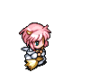
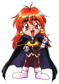
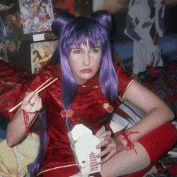
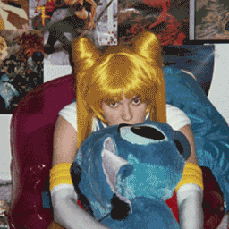
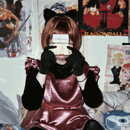
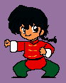
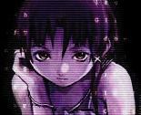

Welcome to my anime web shrine~~! ^.^ ::glomps you:: I hope you're as big of an otaku as I am and this is a place to talk about anime and manga and vote on all of our favorite characters and cosplays!
I went to my very first anime convention this year and I'm very excited to share more cosplays here on my page ^_^ I hope that cosplay becomes more popular and everybody sees how much fun it is, hehehehe. There's all kinds of cool stuff here on my page in the meantime: midis, gifs, a message board, and please don't forget to sign my guestbook!!! ^^ My greatest wish is that more people knew about how amazing anime was and that anime video tapes were everywhere just like in Japan <3
Updates!
6.29.01 Best day EVAR!!! >.> Went to my first anime convention today and added a new section to my page: My Favorite Cosplays. Help me share these cosplays and tell the world about how great anime is!!! |
2.8.01 Submitted a new fan art to the Anime Web Turnpike. I hope everyone likes it!! >> |
11.7.00 Today I added a link to this newscast about anime featuring ME!!! :OOOO That's right, your webmistress was interviewed for Channel 5 as an anime expert ^_^ Plz share the link to your own pages! |
9.16.00 Added some new banners! I love banner swapz and everyone should go and check out my new friends from AIM ^.^ Arda loves anime wigs and is going to help me make my own some day for my very first cosplay, hehe! WeLoveColors is like Hot Topic but better!!!! They have all kinds of striped tights and fingerless gloves for con raves~ Naroodle has really really good ramen, and they LOVE anime just like me! Otakus 4evar rawr! ^^ |
My Favorite Cosplays~
Here are some cosplays i've seen at anime conventions that I really really liked~~!!| "You are already dead!" :O |
 "Where's the Pocky????" |
"Gothic style is my life~~~" |
|  "Moon Prism Make UP!" |
 "Nyan nyan~ *glomp*" |
Have Some Graphics (＾▽＾)
Wahoo~! That's Me! ^o^ |
 Some cute Ranma chibis |
 Serial Experiments Lain is soooo cool! |
A kawaii anime girl |
KENSHIN IS MINE!!! Muhahaa |
*sigh* I wish I could play DDR every day |
Cosplay Pics
Wahaha here are all of the photos from my very first convention ^_^ *sighs* I miss it already and wish every day could be an anime convention, but alas I'll have to make do watching all the cool anime tapes I bought there until the next one~! >_>
A Sailor Moon cosplayer getting ready. That wig is soooo cool O.O
{kind=link}
{kind=link}
Elegant Gothic Lolita is so pretty! I wish I could find more lolita clothes >_> Ah, maybe some day!
{kind=link}
I found this Lolita at Hot Topic (MY FAVORITE
{kind=link}
Waaaaaaa look at this cool Initial D car! O-O
{kind=link}
MY DREAM ROOM T_T Cardcaptor Sakura is too kewl! ^^
{kind=link}
{kind=link}
Sakura-chan looking at neko-chan ^o.o^
{kind=link}
Deco nails, just like in Fruits!!!! :0
{kind=link}
All of my friends from the local ramen shop! We were all interviewed for Channel 5 news :OOOOO
{kind=link}
Senpai is too kewl I can't stand it!!!! >.>
{kind=link}
All of my new anime friends together <3
{kind=link}
 |